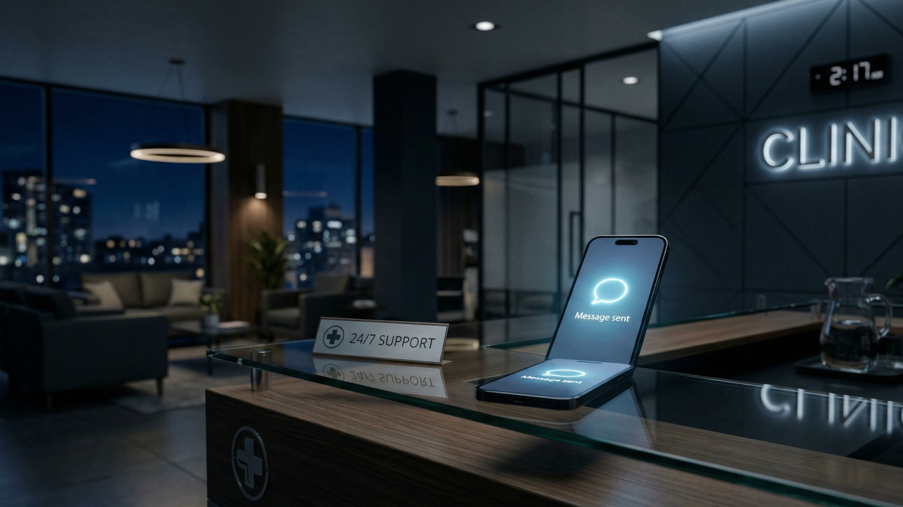
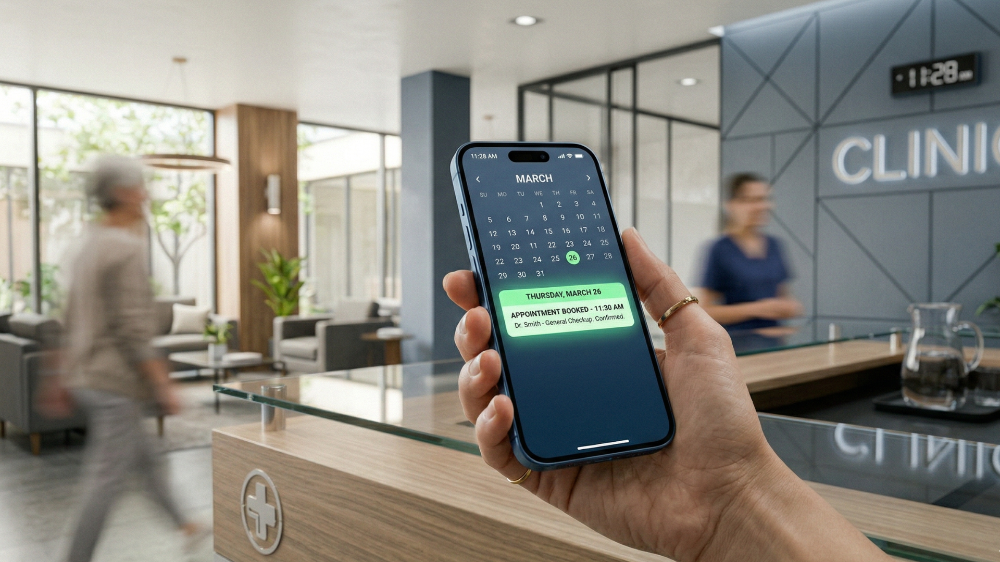

antwortet sofort, liefert vollständige Informationen und verpasst keine einzige Anfrage. Patienten gehen nicht zur Konkurrenz.
Jeder verpasste Anruf ist ein verlorener Patient. Jeder vergessene Termin sind direkte Verluste für die Praxis.
Patienten schreiben abends oder gleichzeitig an mehrere Praxen. Bis Sie antworten, haben sie bereits woanders einen Termin gebucht.
Telefonate, Patienten, Aufgaben. Nachrichten in Messengern warten auf eine Antwort und gehen verloren.
Eine kurze oder unklare Antwort. Der Patient hat nicht bekommen, was er brauchte — und sucht woanders weiter.
Heute eine gute Antwort. Morgen vergessen oder hastig. Patienten wählen die Praxis, die besser kommuniziert.
Der KI-Assistent ist ein Empfangsmitarbeiter, der nie müde wird und immer erreichbar ist.
Das ist kein einfacher Chatbot mit vorgefertigten Buttons. Es ist eine trainierte künstliche Intelligenz, die natürliche Sprache und Kontext versteht und echte Dialoge führt.
Telegram, WhatsApp, Instagram — der KI-Assistent arbeitet in Ihren Kanälen und ist immer online.
Leistungen, Preise, Terminpläne der Ärzte — antwortet präzise und zielgerichtet auf jede Patientenfrage.
Erfasst Termine direkt in Ihrem CRM — ohne Beteiligung des Empfangspersonals.
Ergebnisse, die sofort nach dem Start des KI-Assistenten sichtbar sind.

Kein Patient bleibt ohne Aufmerksamkeit, selbst wenn er samstags um 2 Uhr nachts schreibt.

Die KI übernimmt 70–80 % der routinemäßigen Kommunikation und befreit Ihr Team für die Patientenversorgung in der Praxis.
Antwortgeschwindigkeit ist der entscheidende Faktor. Der KI-Assistent führt das Gespräch zur Terminbuchung, solange der Patient noch motiviert ist.
Eine höfliche, professionelle und präzise Antwort an jeden Patienten, immer. Der Bot hat keine schlechten Tage.
Marktdaten, die für sich sprechen.
US-Praxen nutzen bereits KI
Jede dritte Praxis
nutzt bereits KI für die Patientenkommunikation
Verpasste Anfragen
$0 000 – $0 000
Umsatzverlust pro Jahr pro Praxis
Terminkonversion
0× mehr Termine
wenn KI in den ersten 10 Sekunden antwortet
Quellen: US-Branchenberichte, 2025–2026
Jeder Tag ohne das System bedeutet verlorene Buchungen.
Assistenten testenWir liefern keinen fertigen Standardbot. Wir konfigurieren den Assistenten auf Ihre Leistungen, Preise und Buchungsabläufe.
Kennt Ihre Behandlungen, Preise und Buchungsregeln. Antwortet so, wie Ihr Empfangspersonal es tun würde.
Verbindet sich mit Ihrem CRM oder Kalender. Keine Änderung Ihrer gewohnten Tools erforderlich.
Der Schriftverkehr wird in Ihrem System gespeichert. Sie haben die volle Kontrolle über Patientendaten.
Kommunikationslogik, Buchung und Erinnerungen sind auf medizinische Servicestandards abgestimmt.
Patienten besuchen keine Website. Sie schreiben dort, wo es ihnen bequem ist — und erhalten sofort eine Antwort.
Fehlt ein Kanal? Wir richten ihn ein.
Alle Anfragen — an einem Ort. Sie verpassen nichts.
Ein Klick — und Sie sind bereits mitten in einem echten Gespräch.
Klicken Sie den Button — Telegram öffnet sich. Schreiben Sie wie ein normaler Patient und erleben Sie, wie der Assistent in Echtzeit antwortet.
Wissen Sie schon, was Sie wollen? Beschreiben Sie Ihre Praxis und Anforderungen — wir erstellen ein individuelles Angebot.